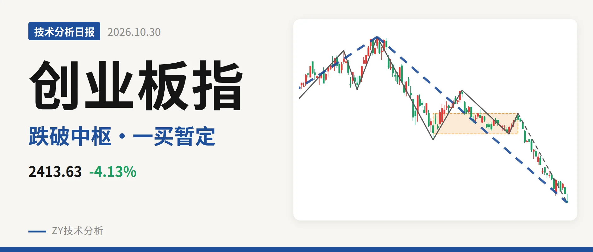
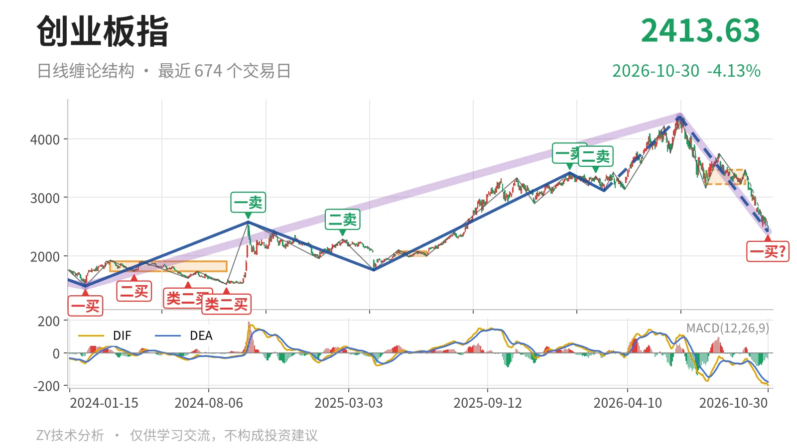
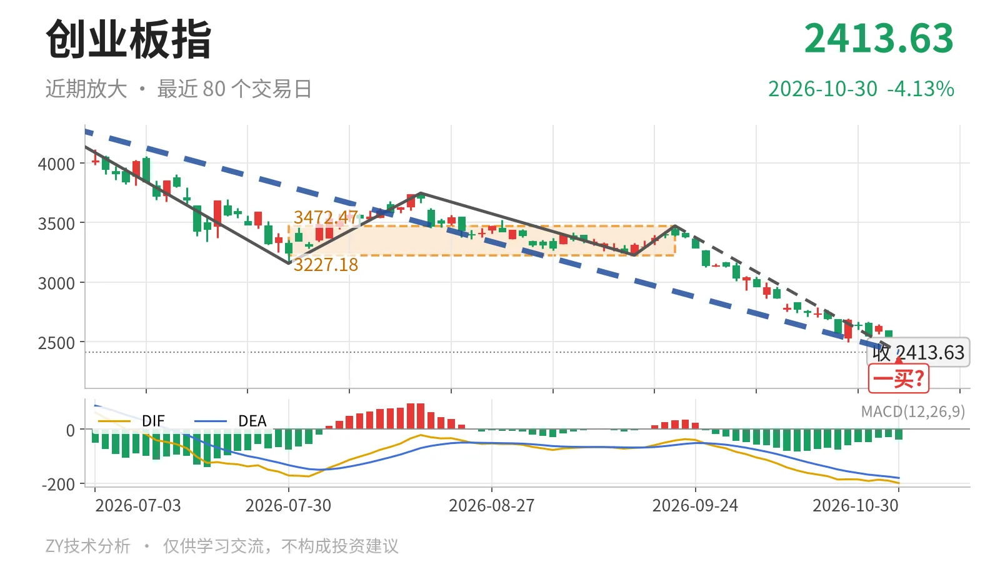

创业板指｜跌破3227中枢下沿，一买暂定

最近日线中枢 3227.18—3472.47点，收盘位于中枢之下
一句话：跌破日线中枢下沿，下跌笔未结束，暂定一买仍待回拉验证
🧭 走势结构：上涨段未终结，回落段延续
当前处于2024年2月5日以来上涨段中的回调段，且回调段还在延续。更大级别上，2021年7月22日至2024年2月5日的下跌段已经结束，2024年2月5日至2026年6月25日的上涨段并未正式走完；但2026年6月25日以来的下跌段没有结束，从4380.41点跌至2413.63点，深约44.9%。日线线段同样显示2026年6月25日以来的下跌线段尚未走完，因此当下不是中枢震荡，而是日线回落段延续。其内部反弹高点一个比一个低：7月30日3747.53点、9月16日3227.18点、9月22日3472.47点，回落结构未改。

📍 中枢位置：跌破最近中枢下沿，反抽看3227点
最近一个日线笔中枢是2026年7月30日至9月22日形成的中枢，区间3227.18—3472.47点，中轴3349.83点。最新收盘2413.63点位于中枢下方，较下沿3227.18点低约25.2%。该中枢较2025年5月14日至2025年6月23日的中枢1996.96—2076.91点明显上移，但当前价格已向下离开中枢，上移后的中枢被反向跌破。仅从位置看，日线结构已回到中枢下方运行，反抽不回3227点就难转强。
⚠️ 买卖点：暂定一买未定，三买结构失效
10月30日的2413.63点只是日线笔级别的暂定一买，所在笔9月22日至10月30日还未结束，会随这一笔延续而变化。此前1月13日3416.84点一卖和2月25日3363.18点二卖，之后被3月9日至6月25日的上涨线段创出新高消化，只对应较小级别。线段级别上，3月9日三买3111.88点已被6月25日以来的下跌段跌破，三买结构失效；下方2025年4月7日二买1756.64点尚未触及。

📉 背驰：面积收缩但DIF新低，不算标准背驰
把9月22日至10月30日的下跌笔与6月25日至7月30日的下跌笔相比，绿柱面积由1837缩至1035，但DIF低点从-171.1降至-199.5，价格也由3158.14点继续新低至2413.63点。这不是标准的新低不新弱，因为DIF同步新低，只是绿柱面积收缩。因此10月30日暂定一买还没有得到力度上的标准背驰确认，DIF仍在零轴下方。
🔍 关键观察：结构偏弱，看3227点与2283点
结构偏弱。向下看，2022年4月27日至2023年8月4日的线段中枢上沿2282.65点附近是第一道结构位，最新收盘仍高于该位置约131点。向上看，反抽若不能回到3227点上方，日线笔级别容易构成三卖；重新站上3227点，6月25日以来的下跌更可能只是中枢扩展。在站稳3227点之前，日线结构偏弱，观察2283点附近能否提供支撑结构。
⚠️ 本文为基于公开行情数据的缠论技术结构记录，由程序自动计算并生成，仅供学习交流，不构成任何投资建议。市场有风险，投资需谨慎。